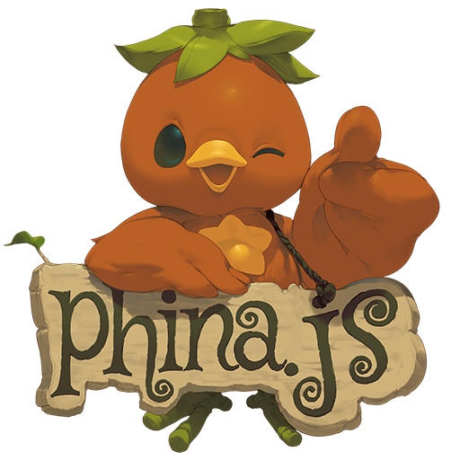

 （ロゴはphinajs.comから借用）
phina.jsについて
私が日々楽しんで使っているjavascriptのゲームライブラリで、tmlib.jsの後継のライブラリになります。現在開発はphina.jsの方にシフトしています。 とりあえずどのようなものか知るためには、以下の紹介記事辺りが参考になるかと思います。
- 本日 JavaScript ゲームライブラリ『phina.js』をリリースしました! by @phi さん
- phina.js - JavaScriptで楽しく簡単にゲームが作れるライブラリ by @simiraaaa さん
- phina.jsの簡単さから基礎知識まで by @axion014 さん
- はじめてのphina.js – JavaScriptゲームライブラリを使ってみた！ by 株式会社LIG さん
気に入っているところ
以下は主観的ですが、他のユーザーも感じているのではないかと思います。
- 同じ処理でもコード量が少なく済みます。全てのゲームライブラリと比較したわけではありませんが、phina.jsで書き慣れると、個人的には同様の処理を行う他のライブラリのコードが冗長に感じるようになりました。
- ソースが読みやすいです。ソースの書き方を真似ることで、結果的に自分のコードも読みやすくなりました。
- 実行確認までのステップが短いです。Web上でコーディングできるrunstantを使うことで、環境構築の手間をかけずに自分のプログラムが確認できます。
- 他に、配列やベクトルなどのコーディングする上でベースとなるクラスの機能拡張が充実しているなどが挙げられます。
とにかく使ってみたい方へ
- Githubのリポジトリに導入方法が記載されていますが、開発者向けの内容に近いので、私も含めて不慣れな方には少し敷居が高いかと思います。
- 一番簡単なのは、runstantへのユーザー登録が必要ですが、runstantに用意されたテンプレートをForkする方法です。
質問など
phina.jsの魅力の一つに、親切なサポート体制があります。 Twitterで#phina_jsタグをつけて質問したり、slack(gitterから移行）に参加して質問すれば、作者の phiさんを始め、他のメンバーが優しく真剣に答えてくれます。些細なことでも良いので、構えずに質問してみて下さい。
Tipsなど
どんなものか少しでも知ってもらうために、phina.js Tips集をよろしければご覧ください。
おわりに
ゲームライブラリは実際に使ってみないとその良し悪しはわかりませんが、恵まれたことにphina.jsは、比較的簡単にトライすることができます。 javascriptでのゲーム開発に興味がある方は、是非一度触ってみて色々と試して頂ければと思います。